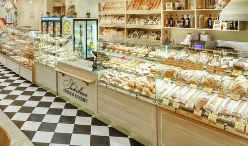
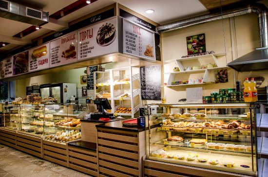

Информация о наших пекарнях

Пекарня на Рю-дю-Бак
Наша первая пекарня, открытая в 1990 году. Здесь мы печем хлеб по старинным рецептам.

Пекарня на Монмартре
Новая пекарня в самом сердце Парижа, предлагающая широкий ассортимент выпечки.